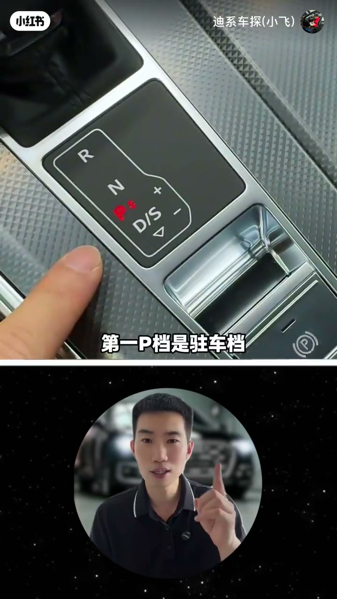
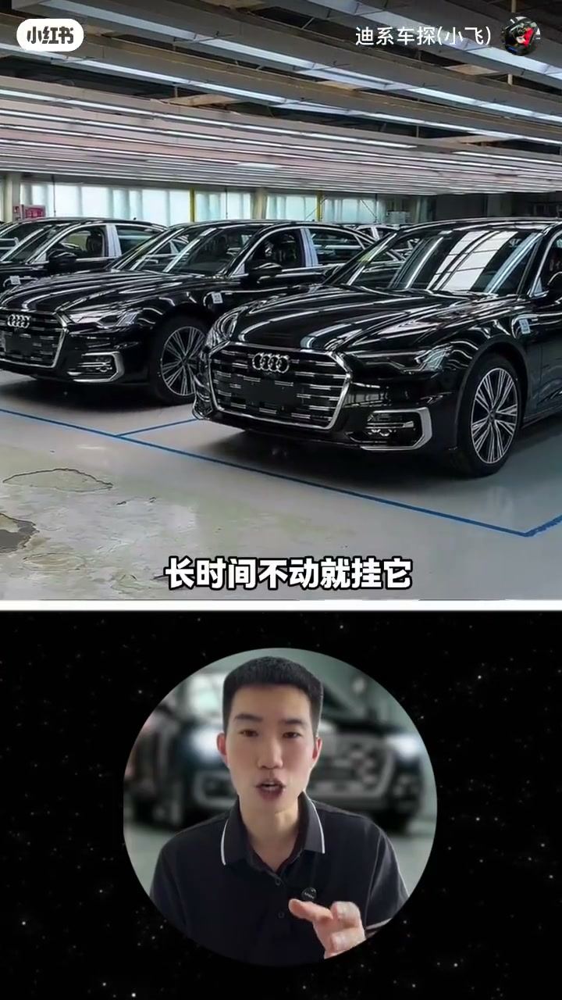
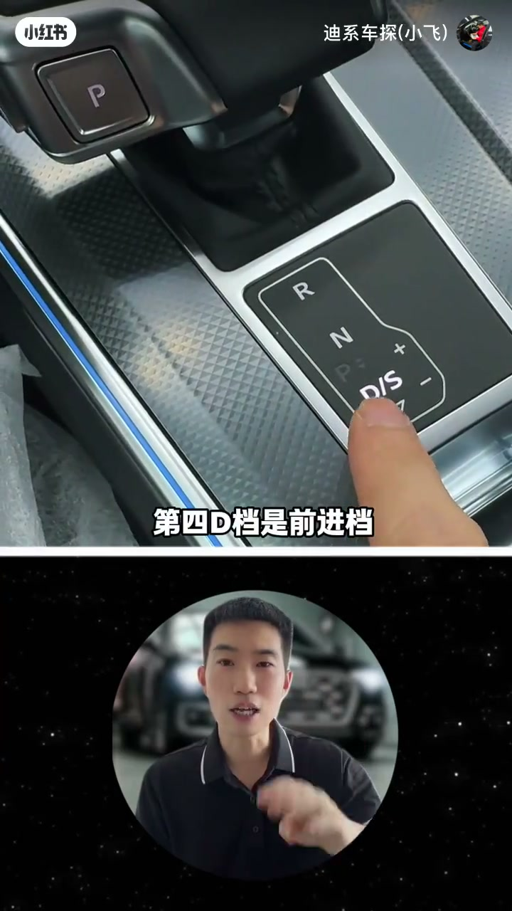
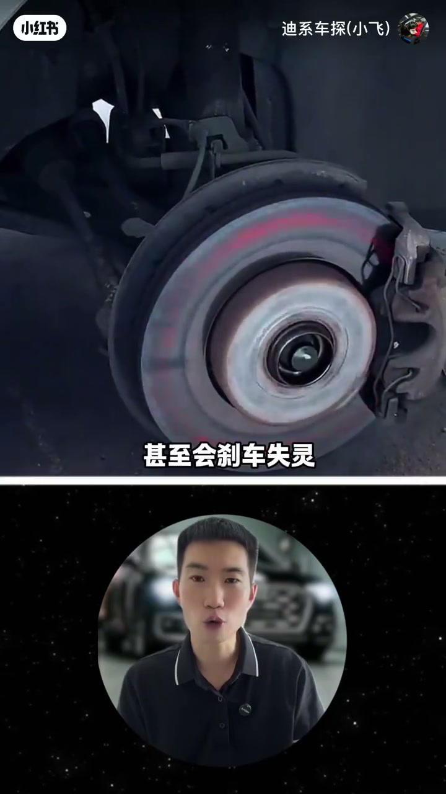
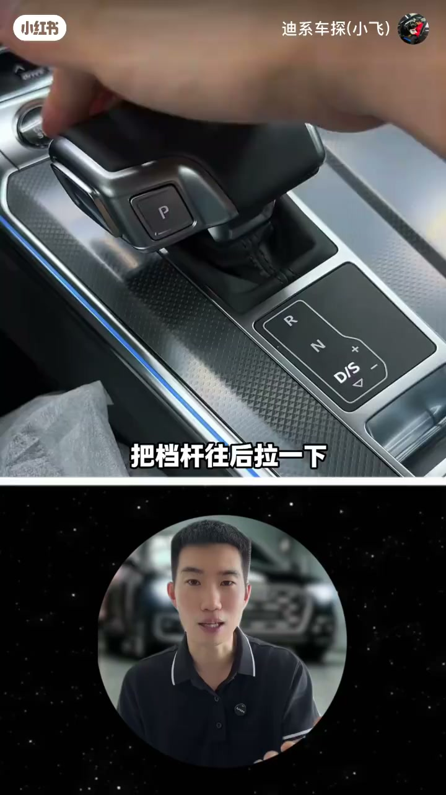

内容要点
「迪系车探(小飞)」按 P/R/N/D/M/S 逐档讲奥迪电子挡杆：只会挂 D 等于白花钱，不同路况要会切模式。开场 ASR 乱码，档位定义与操作以画面字幕为准重建。
知识结构
长时间不动挂 P，靠锁止防溜车。
倒车挂 R 即可。
拖车必须挂 N，挂错档可能报废变速箱。
日常通勤与高速最顺手。
长下坡/上坡/堵车用；发动机制动防刹车失灵。
D 档往后拉进 S，延迟升档拉高转速超车。
P 停、R 倒、N 拖、D 走；长坡与堵车切 M 借发动机制动，超车往后拉进 S——按场景换模式，而不是一路 D 到底。
00:00-00:46P R N D：停倒拖走
字幕开场强调：只会使 D 档，钱就白花了，一定要学会不同路况用不同档。第一 P 档是驻车档——长时间不动就挂它，防止车辆移动和溜车（画面亦提到变速箱锁止齿轮）。第二 R 档倒车时挂上即可。
第三 N 档为空挡，拖车场景要用：车泡水或开不了需拖车时必须挂 N，挂其他档位变速箱可能直接报废，维修费不便宜。第四 D 档是前进档，日常通勤跑高速最顺手。



00:46-01:48M 档保命与 S 档超车
第五 M 档手动模式：长下坡必须用。若挂着 D 全靠刹车控速，时间一长刹车易过热甚至失灵；把挡杆往右掰进 M，前后拨动加减挡，靠发动机制动再配合刹车，关键时刻能保命。长上坡或堵车也可进 M，爬坡更有劲，并减少频繁换挡导致离合器过热、顿挫异响。
第六 S 档运动档：需要加速或快速超车时，在 D 档状态下把挡杆往后拉一下即入 S；变速箱会延迟升档、把转速拉高。收尾强调搞明白 S 与 M 的分工。


完整转录（34段）
以下文本由 Whisper medium 模型自动转录，可能存在少量识别误差，已尽可能修正。
开要敌敌如果你只会地挡左天下
它是拖车用的
车子泡毛开不了需要拖车了
一定要把档位挂到N档
如果说你挂到其他档位
便用箱可能直接就杠个废了
那唯有费可不便宜
第四地挡是前进挡
平时正常往前开车就挂地挡
日常通勤跑高速用它是最顺手的
第五M档手动模式
长厦坡路段必须用它
如果你挂著地挡全靠踩煞车来控制车速
时间一长煞车容易过热
甚至会煞车死灵
所以长厦坡路段把挡坝往右掰一下
就能切换到M档
前后拨动还可以加减挡
靠发动机制动再配合煞车
能有效防止煞车死灵
关键手真能保命
另外长上坡或者堵车的时候
也可以使用M档
爬坡更有劲
也能避免频繁换档导致立刻气过热
出现顿挫和异响
第六S档运动档
需要加速或者快速超车的时候
你就挂它
操作方法也很简单
就是在地挡状态下
把挡杆往后拉一下
就挂入到S档了
挂入到S档以后变速箱会延遏会延遏会延遏会延会延�